Токио · Ёцуя · бар
Standing Room Suzuden: какууси в Ёцуе при винной лавке 1850 года
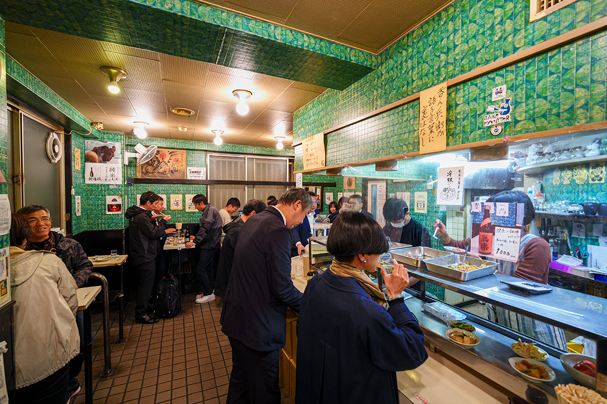
Какууси называют уголок винной лавки, где купленное сакэ можно выпить тут же, не отходя от прилавка. Лавку Suzuden в Ёцуе любители сакэ зовут святым местом японского сакэ, а её стоячий бар остаётся одним из самых известных какууси Токио.
Какууси
Выпить там, где купил
Какууси родились в винных лавках: покупатель брал бутылку и выпивал прямо в углу магазина, закусывая консервами и сушёной рыбой с тех же полок. Со временем во многих таких местах появилась настоящая кухня, и в 2024 году в какууси уже нередко можно поесть так же разнообразно, как в идзакае.
Standing Room Suzuden работает при старой винной лавке Suzuden. Святым местом японского сакэ её называют не только за долгую историю: за этим стоят строгий контроль качества и умение предвидеть, куда повернёт рынок.
История
Лавка, которая пережила Эдо, войну и землетрясение
Suzuden открылся в 1850 году в Эдо, когда в городе расцветала культура горожан, и с тех пор стоит на том же месте в Ёцуе. Лавка пережила смуту конца эпохи Эдо и реформы Мэйдзи, Великое землетрясение Канто, бомбардировки Токио и эпидемию коронавируса.
Основатель был третьим сыном семьи из провинции Симоцукэ, нынешней префектуры Тотиги. Вместе со старшим братом он торговал в Эдо лекарственными травами, а на скопленные деньги открыл собственное дело. В эпоху Мэйдзи лавка стала поставщиком императорского двора и возила сакэ во дворец, пока эта система поставщиков не была отменена.
Погреб
Сакэ при минус трёх градусах
Перелом наступил при отце нынешнего, седьмого главы Suzuden. Он заранее понял, что продажу алкоголя скоро освободят от строгого лицензирования (послабления начались в 1989 году), и решил, что обычной лавке не выжить. В 1970-х годах Suzuden стал магазином дзидзакэ, местного сакэ из разных уголков страны.
Тогда же глава лавки ездил в Европу изучать торговлю и увидел, как там хранят вино. Вернувшись, он сразу объявил, что под магазином будет холодный погреб, и устроил его с тремя зонами: 10 °C, 5 °C и минус 3 °C.
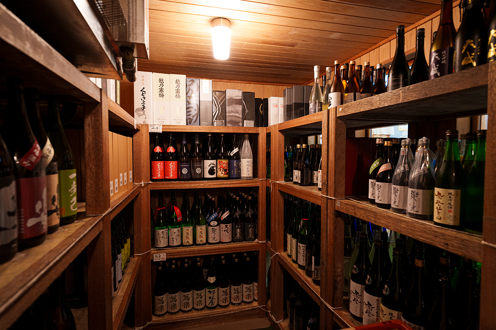
«В то время сакэ хранили при комнатной температуре, и оно портилось, не раскрывая своего настоящего вкуса. Это считалось нормой, поэтому, когда мы стали магазином местного сакэ, многие были против. Но погреб позволил продавать сакэ свежим, без потери аромата. Думаю, Suzuden первым взялся за качество хранения сакэ всерьёз»
седьмой глава Suzuden
Благодаря погребу в лавку стали привозить сакэ со всей Японии, и это дало толчок первому буму местного сакэ, лёгкого и сухого. Отец нынешнего главы одним из первых заметил и «Дзюёндай» пивоварни Такаги, символ второго бума, который продолжается до сих пор: сакэ насыщенное, с богатым вкусом. В середине 1990-х годов молодой глава пивоварни, он же главный пивовар, сам привёз в Suzuden только что созданный «Дзюёндай». Попробовав, хозяин лавки сказал: «Вот такого сакэ я и ждал».
«Отца называли проповедником местного сакэ. Все сорта, которые он находил, становились хитами»
дочь прежнего главы Suzuden
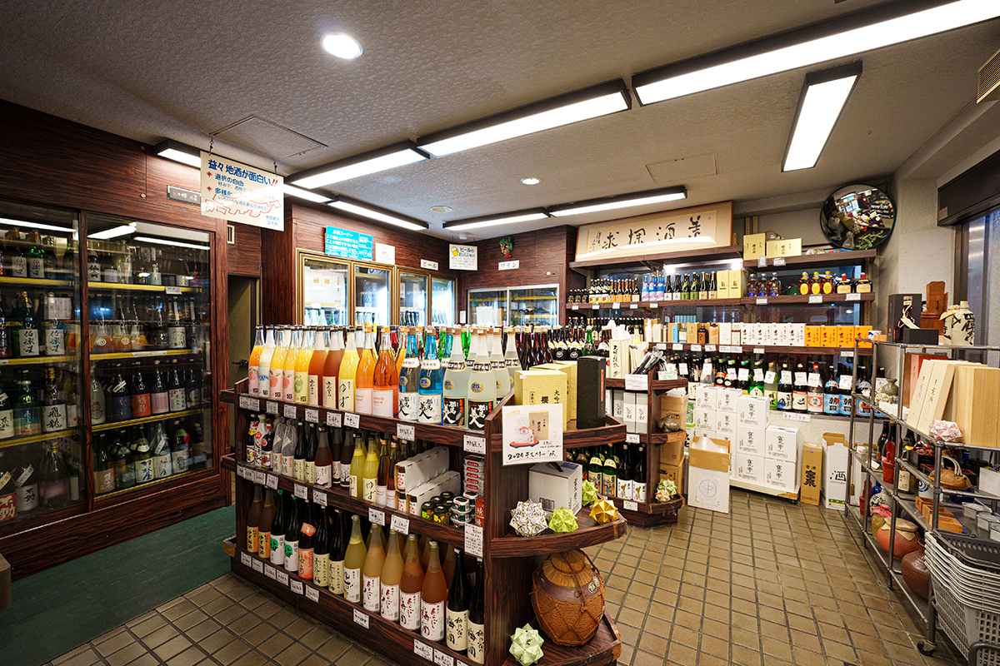
Бар
Лавка с толпой у входа
Святым местом Suzuden делают не только история и смелые решения прежнего главы. Немалую роль сыграл стоячий бар Standing Room Suzuden, который его жена долго вела одна. Какууси в лавке устраивали ещё в эпоху Мэйдзи: до войны сюда заходили ремесленники, после войны чиновники.
«Покупатели, которые пили стоя, заполняли всё: и вход, и двор. Standing Room Suzuden мы сделали, когда лавка перешла на местное сакэ. Блюда дня готовим старательно и солим чуть сильнее, чтобы они шли под сакэ. Сюда приходят те, кто любит выпить. Пусть пьют и едят как хотят и разговаривают»
дочь прежнего главы Suzuden
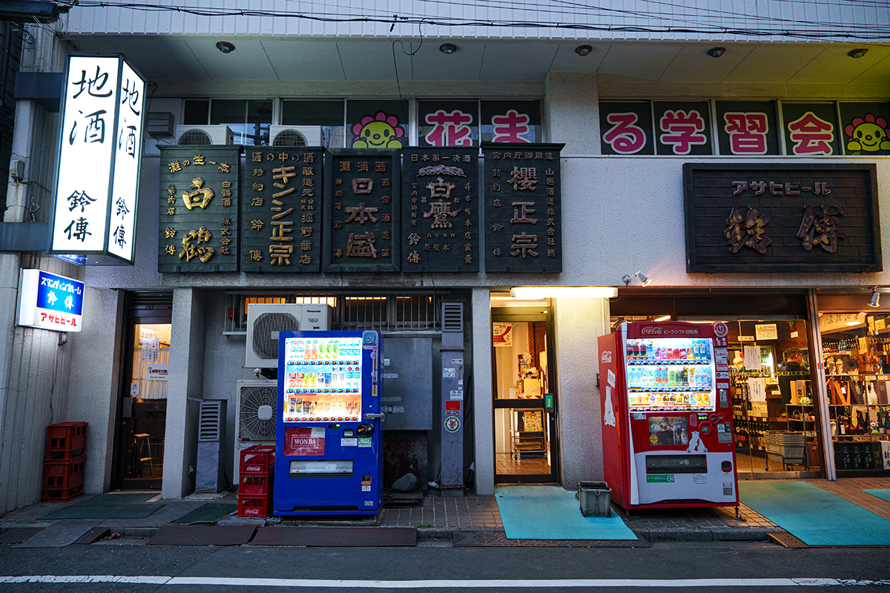
Стойка
Как здесь заказывают
За дверью Standing Room Suzuden открывается зал, где многое осталось как в эпоху Сёва (1926–1989). На стенах висит рукописное меню сакэ, на стойке выставлены блюда, которые подают, пока не кончатся. Заказывают у стойки и платят сразу при получении. В стакан наливают полный го сакэ (180 мл), поэтому сначала делают глоток прямо у стойки, чтобы не расплескать, и только потом идут на место. Так здесь принято.
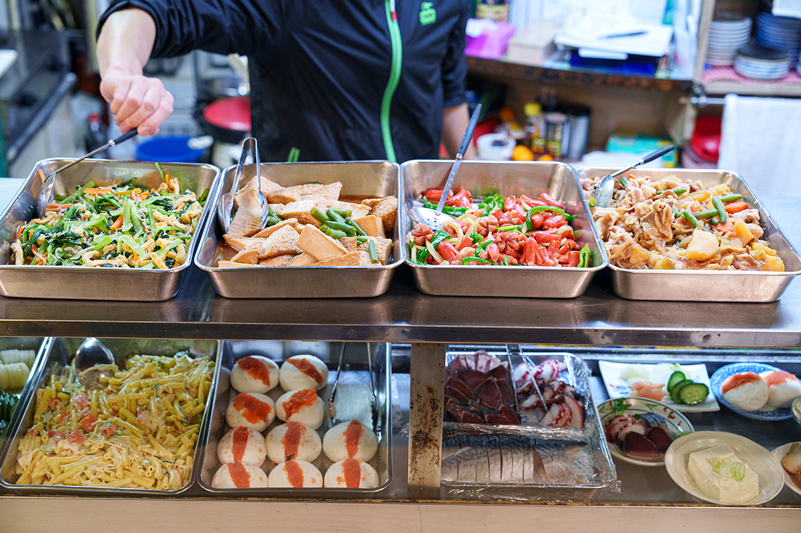
Постоянных сортов сакэ семь, среди них «Масуидзуми» и «Тэдорикава». Ещё около 18 сортов со всей страны меняются, например «Сяраку» или «Аманэко Спарк» пивоварни «Арамаса». В меню указаны только марка, категория сакэ, префектура и цена, а показателей сухости и кислотности нет совсем. Хозяева хотят, чтобы гости не думали головой, а просто пили вкусное сакэ. Поэтому, даже если вы плохо разбираетесь в сакэ, спросите персонал: здесь охотно объяснят. В 2024 году за го сакэ платили от 420 до 1 000 иен, средняя бутылка пива и хайбол стоили по 470 иен.
«Новым гостям мы очень рады. Хочется, чтобы здесь было спокойно, когда бы человек ни пришёл»
дочь прежнего главы Suzuden
Закуски
Сакэ и домашняя еда
Закуски в Standing Room Suzuden простые, как дома, и каждую можно подобрать к своему сакэ.
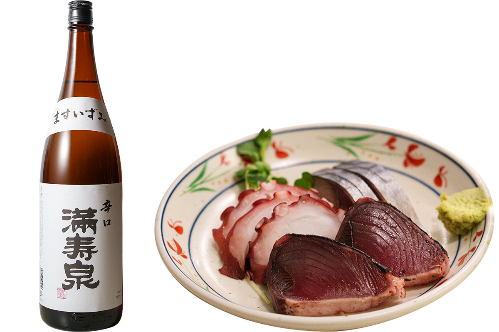
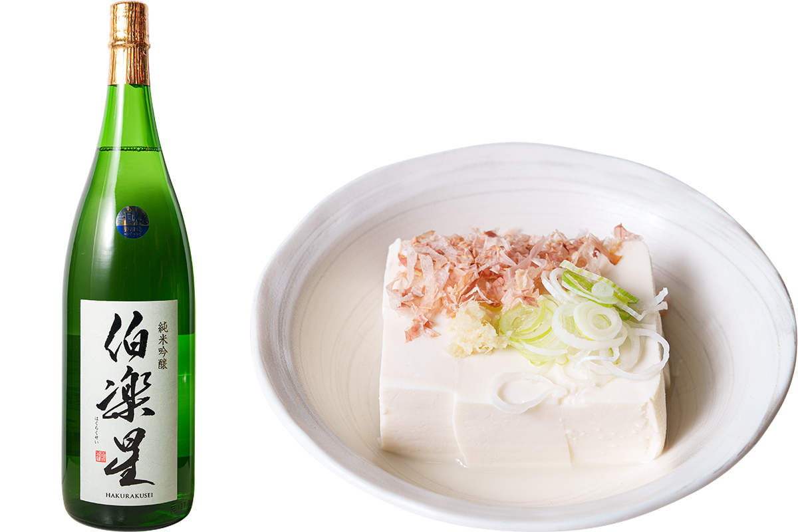
Ассорти сашими и «Масуидзуми» берут почти все: это сакэ с чистым послевкусием, которое не надоедает. Плотный тофу из местной тофу-лавки хорош и сам по себе, и под «Хакуракусэй».
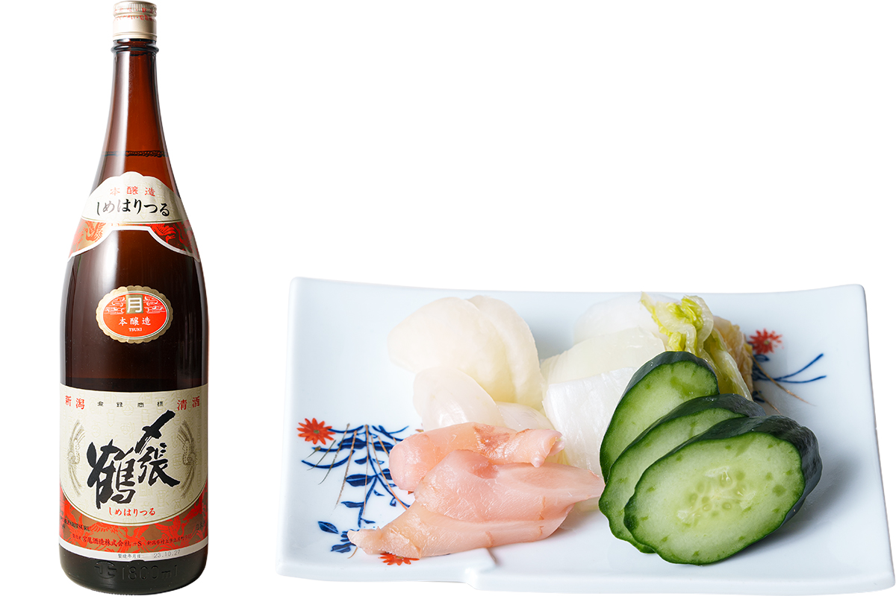
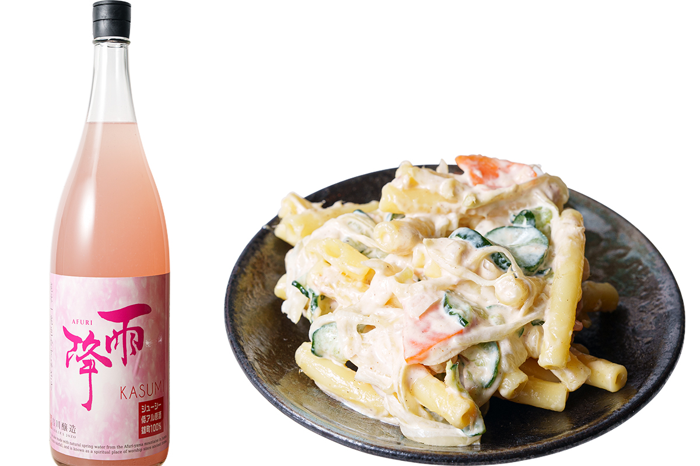
Макаронный салат здесь чередуют с картофельным: один день один, другой день другой. Сладость и кислинка мутного сакэ хорошо ложатся на его мягкий вкус.
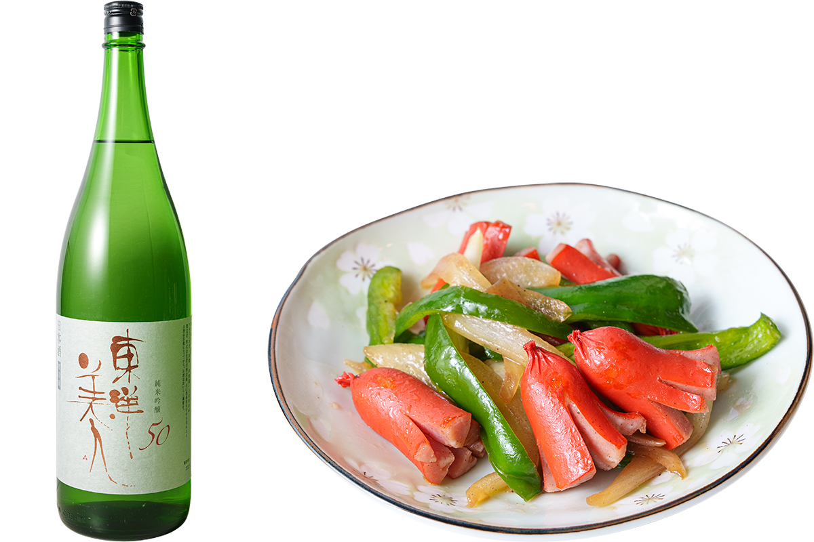
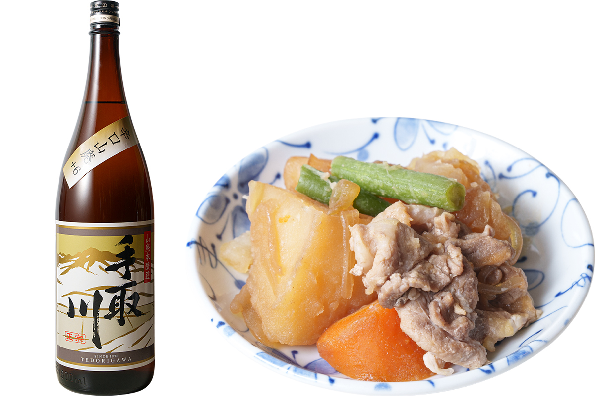
Любое сакэ из меню могут подогреть, но для кан, подогретого сакэ, хозяева советуют «Сакура-масамунэ». Его наливают в аппарат, внутри которого горячая вода, и сакэ нагревается, пока течёт сквозь него.
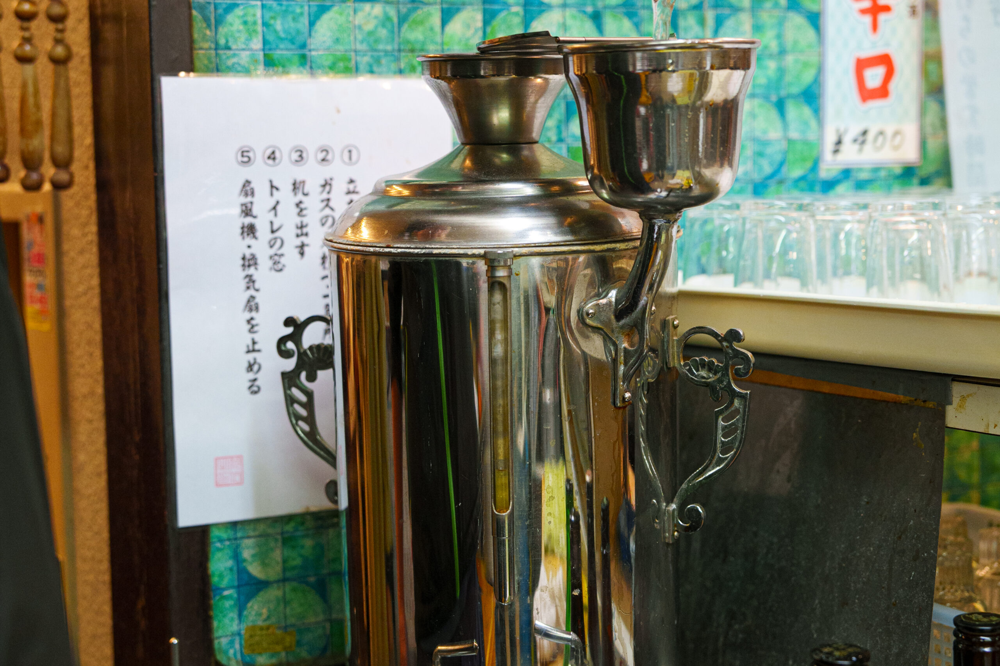
Standing Room Suzuden
- Адрес
- Токио, Синдзюку, Ёцуя, 1-10
- Телефон
- +81 3-3351-1777
- Часы работы
- 17:00–20:30
- Выходные
- суббота, воскресенье, праздники
- Как добраться
- около 2 минут пешком от станции Ёцуя
- Сайт
- suzuden-sake.com
Фото: Ацуси Ямахира.